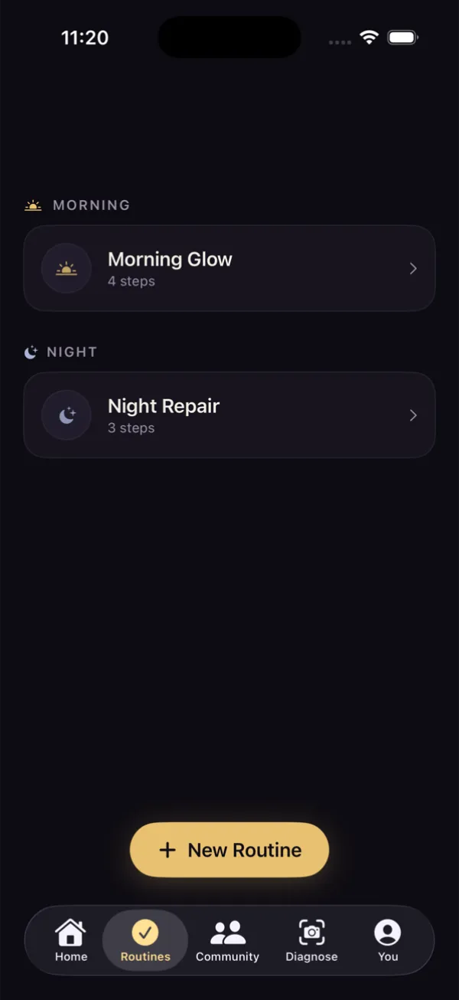

SwiftUI · Supabase · GPT-4o
Sera
A skincare companion with AI photo diagnostics, routines, streaks, and a social feed.


SwiftUI · Supabase · GPT-4o
A skincare companion with AI photo diagnostics, routines, streaks, and a social feed.

Swift · Metal
Pinch to morph a Metal particle field between a sphere and a cloud. Drag to spin.

React Native
Book discovery and recommendations, built for the Hurt Hub with reusable components and client-side state.
TypeScript · Wikidata
Where the museum’s objects come from, how they were acquired, and who wants them back.


FastAPI · LangChain · ChromaDB
A RAG assistant for international-student policy questions, with ingestion, retrieval, source handling, and evaluation.
FastAPI · Postgres · Redis
Upload a beat and rough lyrics. VerseLab scores how well they fit the pocket and helps you rewrite them.
FastAPI · Pandas
Ingests bank PDFs and CSVs, normalises transactions, and turns them into budgets.

Chrome extension · TypeScript
Reads your NYT Wordle board and ranks the next guess by expected information gain.
Python · Selenium
ETL pipelines that scrape, clean, and structure professor ratings and reviews for search.
Editorial web
A magazine-style spread on music and style across Johannesburg, Kinshasa, and Accra.


Redesign · Client
Clearer navigation and a better booking flow. Engagement up about 30%.